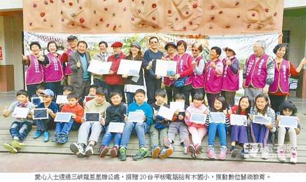

三峽梅樹月 偏鄉小學獲贈平板電腦
葉德正｜中國時報／新北焦點‧運動∣2015年3月14日
李梅樹基金會13日舉辦「老梅新枝，植樹傳愛」活動，邀請上百位孩子與志工種下50棵梅樹，為三峽年度藝文盛事「梅樹月」拉開序幕；愛心人士更透過三峽龍恩里辦公處，捐贈20台平板電腦給有木國小，推動數位美術教育，讓藝術向下扎根。
3月是三峽已故知名藝術家李梅樹的誕辰月，李梅樹紀念館與多位在地藝術家合作，共同舉辦「梅樹月」活動，28日起至4月26日，串聯17處展點、50位跨界藝術家與6組創作團隊，盼帶動三峽文化生活圈。
昨日李梅樹基金會於三峽中園國小及有木國小舉辦「老梅新枝，植樹傳愛」植梅樹活動，2間學校100多位孩童與龍恩里志工一起親手種植50棵梅樹。
李梅樹紀念館長李景光表示，在李梅樹冥誕植梅樹，除紀念他一生愛鄉愛土情懷，也提醒大家梅花是國花及傲骨不屈的精神，在一片瘋櫻花之際，盼梅樹在三峽遍地開花，成為美麗梅樹城。
除植梅樹活動，三峽1名不願具名的善心人士，捐出20台平板電腦贈送有木國小。前龍恩里長林富子表示，該名善心人士得知有木國小教學需要使用平板電腦，本著「得之於社會、回饋於社會」精神，特別透過龍恩里辦公處捐贈。
有木國小校長林逸松表示，偏鄉小學資源較少，感謝這位善心人士捐贈平板電腦，未來將利用平板結合學校特別的生態環境，進行自然、藝術及作文教育，讓教學更生動活潑。